Garduri din fier forjat – Eleganță și Siguranță pentru Oricare Locuință Vălenii de Munte
Adăugați un strop de rafinament și siguranță în jurul casei dumneavoastră
cu gardurile noastre din fier forjat. Fiecare piesă este realizată cu măiestrie
de meșteșugari experimentați, combinând tradiția fierului forjat cu designuri moderne și elegante.
Aceste garduri nu doar că protejează, dar aduc și o notă de distincție, îmbinând rezistența cu estetica deosebită.
Personalizăm fiecare proiect pentru a se potrivi perfect stilului și nevoilor dumneavoastră,
oferindu-vă soluții durabile și de înaltă calitate.
250 €150 €
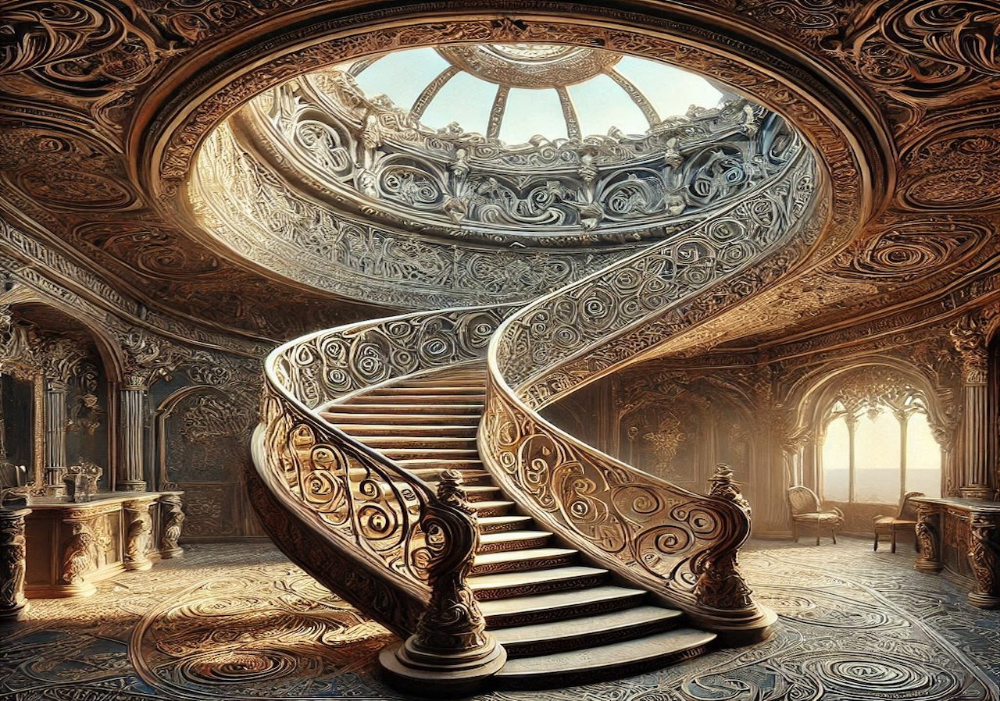
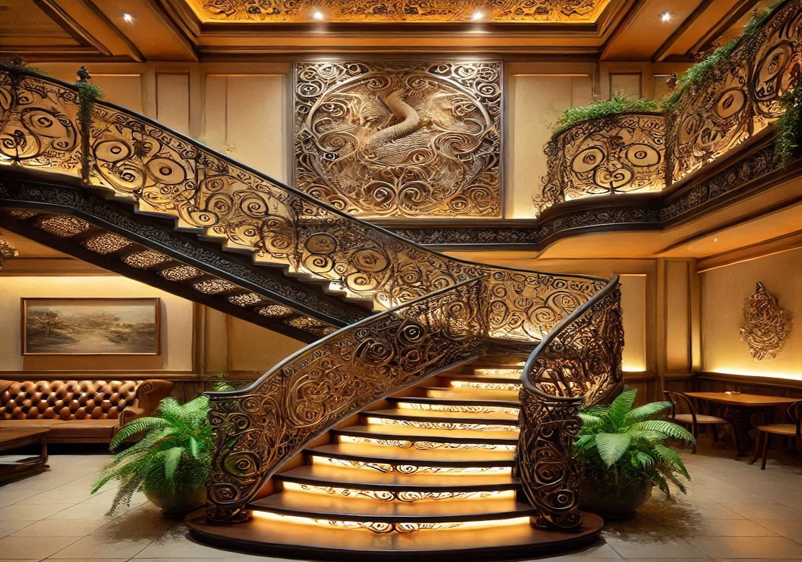
Scări Interioare din Fier Forjat – Eleganță și Stil în Fiecare DetaliuVălenii de MunteTransformă-ți interiorul cu scările noastre din fier forjat,
o alegere perfectă pentru a adăuga un aer de rafinament
și eleganță oricărei locuințe. Fiecare scară este realizată manual,
cu un design unic care combină durabilitatea fierului forjat
cu frumusețea detaliilor fine. Indiferent dacă preferi un stil clasic,
modern sau eclectic, scările noastre interioare se
integrează perfect în orice spațiu, devenind nu doar o cale de acces,
ci și un element de decor remarcabil.
155 €55 €
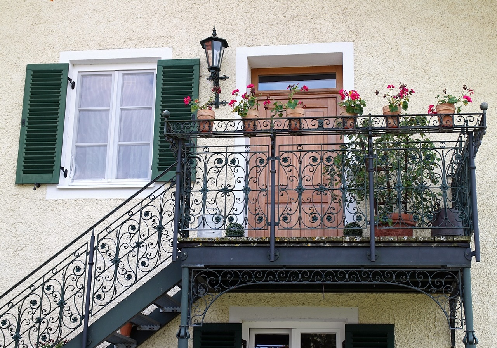
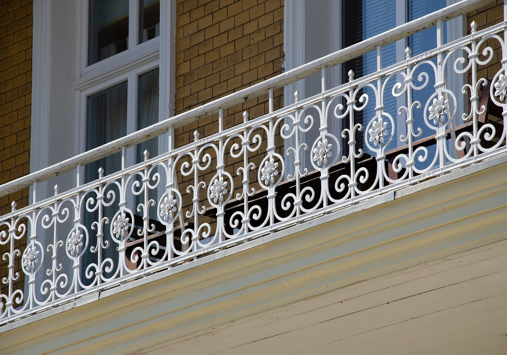
Balcoane din Fier Forjat – Eleganță și Siguranță pentru Spațiile Tale ExterioareVălenii de Munte Adaugă un plus de stil și siguranță locuinței tale
cu balcoanele din fier forjat, care combină frumusețea clasică
a metalului cu designuri personalizate, adaptate fiecărui gust.
Fiecare balustradă este realizată cu atenție la detalii,
oferindu-ți nu doar protecție, ci și un element de decor sofisticat
pentru exteriorul casei tale.
Alege balcoane din fier forjat – un simbol al rafinamentului,
siguranței și al calității care va transforma orice fațadă.
155 €55 €
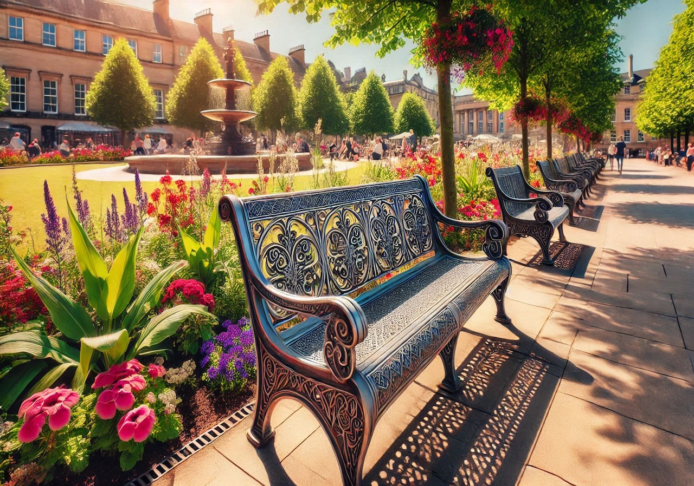
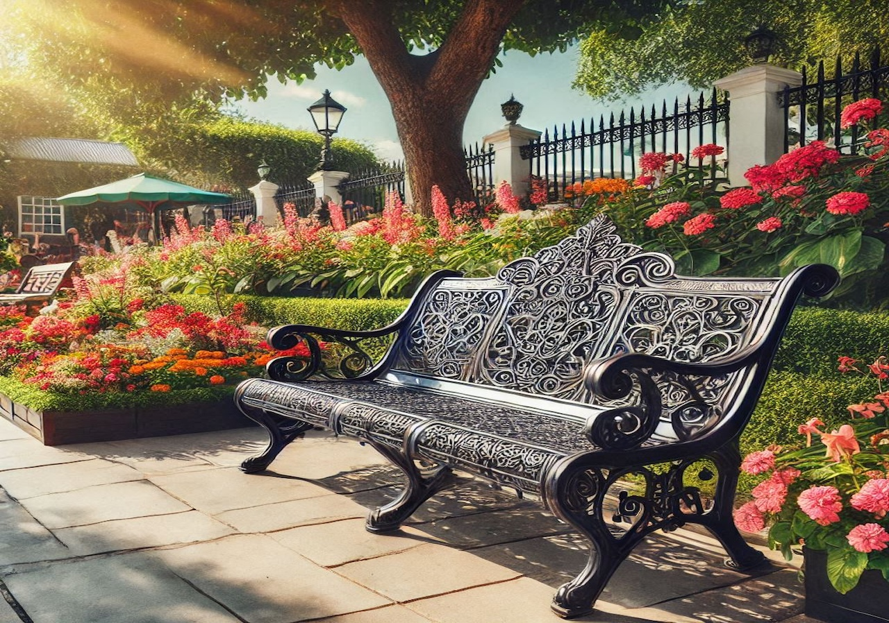
Canapele din Fier Forjat – Asigură atât confort cât și durabilitateVălenii de Munte Cu detalii atent realizate și finisaje de înaltă calitate,
canapelele noastre sunt ideale pentru cei care apreciază frumusețea clasică,
dar și funcționalitatea modernă. Pernele confortabile și materialele rezistente
completează designul, oferindu-ți atât un loc de relaxare, cât și un element decorativ deosebit.
Alege o canapea din fier forjat pentru un stil atemporal care
aduce valoare oricărui spațiu, interior sau exterior. Personalizăm
fiecare piesă în funcție de preferințele tale,
pentru a crea mobilierul perfect pentru casa ta.
155 €55 €
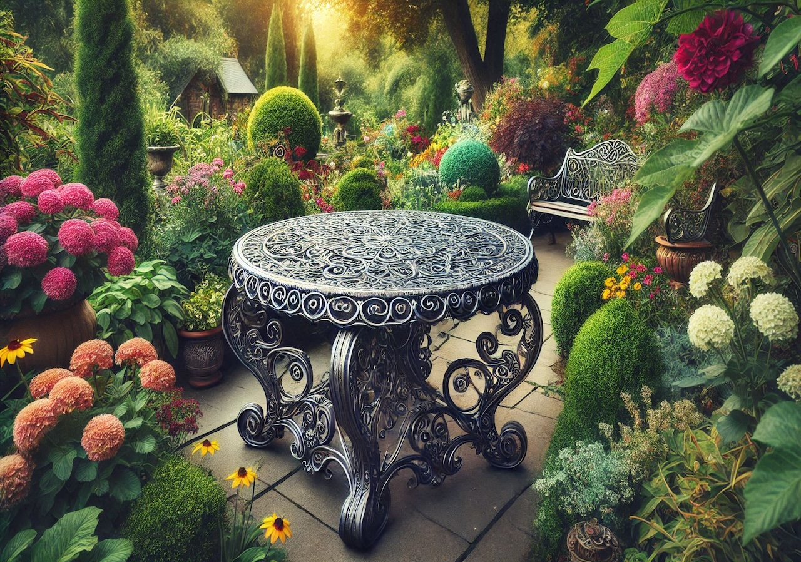
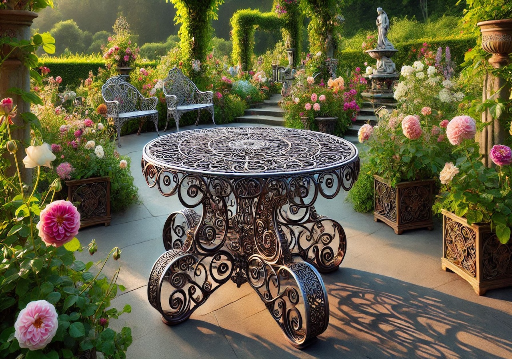
Mese din Fier Forjat – Eleganță și Funcționalitate în Fiecare DetaliuVălenii de Munte Mesele noastre se potrivesc perfect atât în interior,
cât și în exterior, fiind ideale pentru a crea un ambient sofisticat în sufragerie,
bucătărie, terasă sau grădină. Disponibile într-o varietate de dimensiuni
și stiluri de la modele clasice și romantice la cele moderne și minimaliste
acestea sunt gândite să se adapteze fiecărui gust și nevoi.
Alege o masă din fier forjat pentru a transforma orice spațiu într-un loc special,
unde funcționalitatea și estetica se întâlnesc perfect.
Personalizăm fiecare masă pentru a se integra armonios în decorul casei tale,
garantând totodată calitate și durabilitate pe termen lung. 155 €55 €
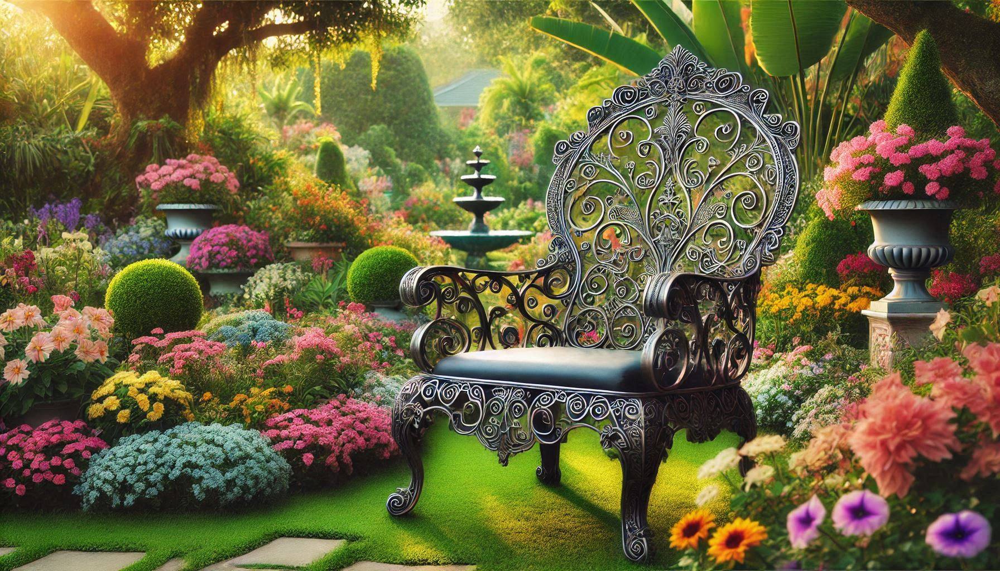
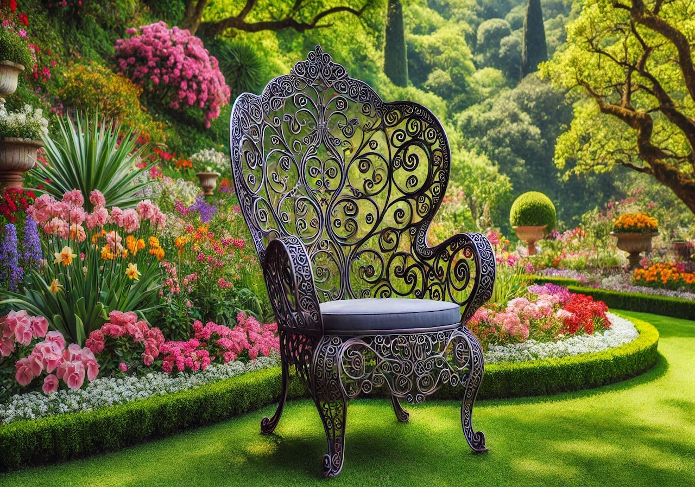
Scaune din Fier Forjat - Eleganță și Confort – într-un design fără vârstă!Vălenii de Munte Scaunele din fier forjat sunt ideale pentru livinguri,
terase, grădini sau săli de mese, fiind disponibile într-o gamă variată de modele
de la cele clasice și romantice la cele moderne și minimaliste.
Pernele atent alese și finisajele premium oferă nu doar un suport perfect,
ci și un farmec aparte fiecărei piese.Alege scaune din fier forjat pentru o investiție
în calitate și stil, ideale pentru a transforma orice decor într-un spațiu primitor și sofisticat.
Fiecare piesă poate fi personalizată pentru a se potrivi perfect preferințelor tale,
fiind atât funcționale, cât și o declarație de rafinament. 155 €55 €
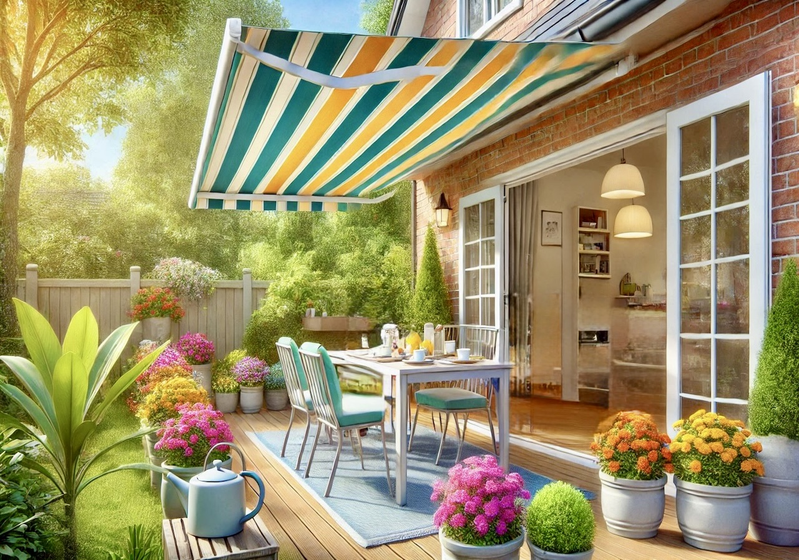
Copertine cu Suporturi din Fier Forjat – Protecție și Eleganță pentru Fiecare SpațiuVălenii de Munte Fie că dorești o copertină pentru ușa de intrare,
pentru balcon sau pentru terasă, fiecare piesă este personalizată
pentru a oferi nu doar protecție împotriva intemperiilor, dar și
o notă de distincție și rafinament spațiului tău. Detaliile fine,
linii elegante și finisajele de înaltă calitate asigură atât
un aspect estetic plăcut, cât și o durabilitate pe termen lung. 155 €55 €
Fierul forjat de calitate începe cu o discuție, hai să creăm ceva frumos împreună! Transformă-ți ideea în realitate la un apel distanță !
 Apăsați aici pentru mai multe detalii
Apăsați aici pentru mai multe detalii


 Vălenii de Munte
Adăugați un strop de rafinament și siguranță în jurul casei dumneavoastră
Vălenii de Munte
Adăugați un strop de rafinament și siguranță în jurul casei dumneavoastră  +40 761 820 028
+40 761 820 028 stancescuviorel8@gmail.com
stancescuviorel8@gmail.com Vio Fier Forjat
Vio Fier Forjat